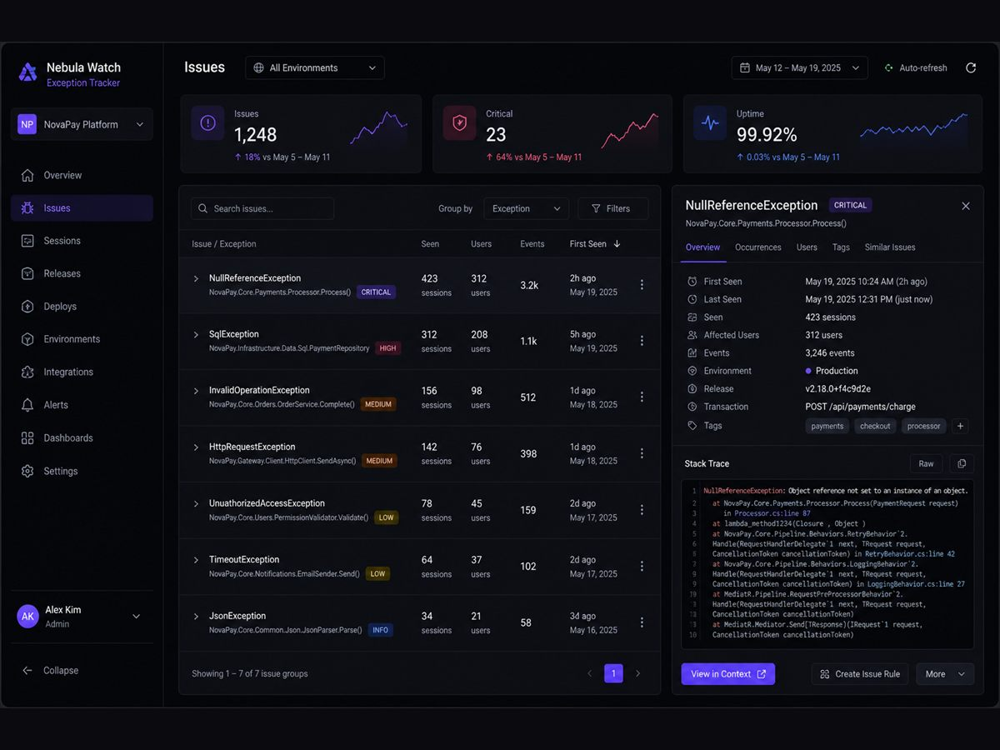
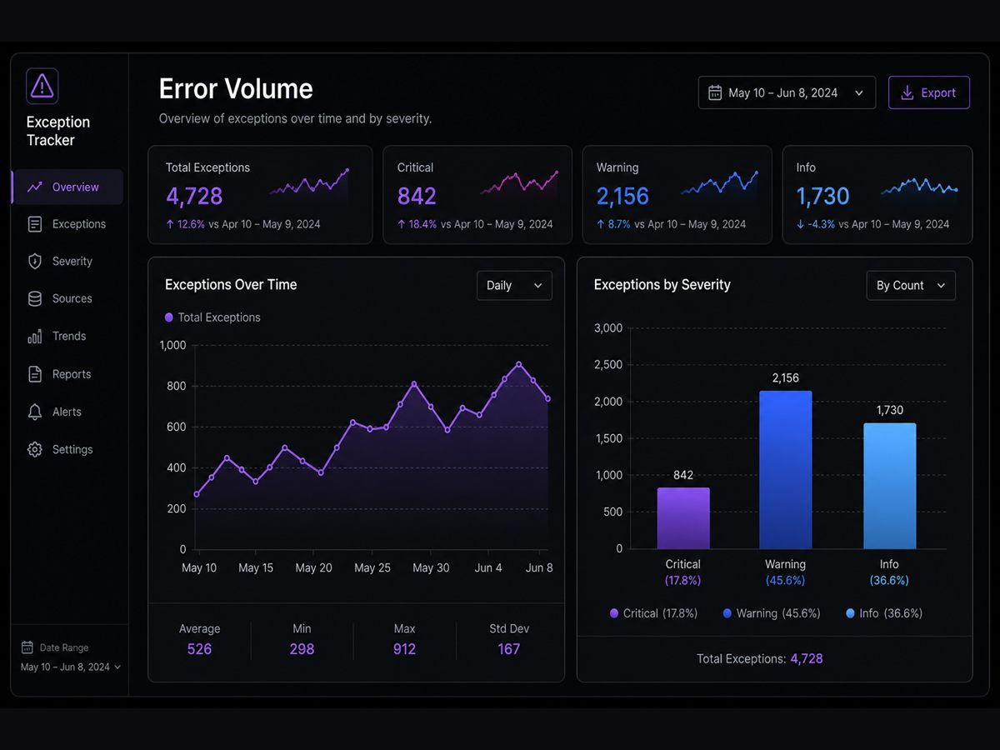
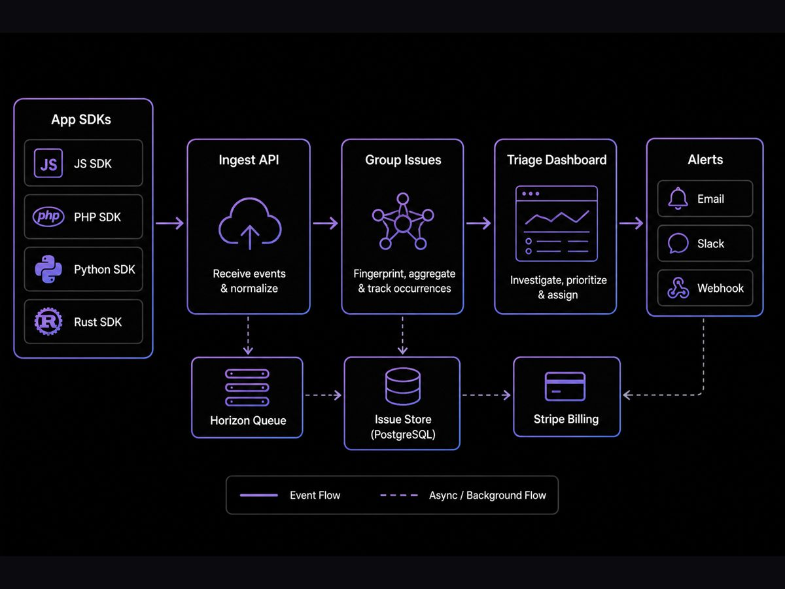

Case study · 04 · Observability · Personal
Exception Tracker — production error triage & monitoring

01 Overview
Exception Tracker is a personal multi-tenant observability SaaS for developers and DevOps teams — ingest production errors, group them into issues, set alerts, and debug with traces, uptime monitors and session replay in one place.
The local codebase is a Laravel monolith with Sanctum auth, Redis/Horizon queues, Stripe billing, tenant-scoped data, Blade customer dashboards and official SDKs under platform/sdk/.
02 Screenshots
Illustrative 4:3 mockups of the triage surfaces verified in the codebase — dashboard, volume charts and ingest-to-alert flow.


03 My Role
- Designed and built a full observability product — ingest protocol, issue grouping, triage UI and alert workflows.
- Implemented tenant isolation so organizations keep projects, issues, monitors and billing scoped per tenant.
- Shipped official SDKs (JavaScript, Node, PHP, Laravel, Python, Rust, plus native iOS/Android MVPs) for capture and flush.
- Added monitoring surfaces: HTTP uptime checks, cron heartbeats, charted HTTP/SQL/queue signals and session replay capture.
- Wired Stripe subscriptions / usage-oriented billing and admin/customer dashboards for ops and revenue views.
04 Engineering Challenges
- Collapsing noisy exception events into actionable issues without losing searchable history.
- Keeping multi-tenant isolation correct across ingest, queries, alerts and billing.
- Packaging one product surface for exceptions, traces, uptime and replay — without Datadog-level complexity.
05 What I Built
SDK ingest into a Laravel API, intelligent issue grouping, severity-aware triage dashboards, Horizon-backed jobs, Stripe plans and optional enterprise auth hooks (SAML/SCIM foundations) — so production debugging stays in one workflow.
Triage loop
Verified product loop from ExceptionCaptureService, issue models, monitoring dashboards and report/alert jobs.
Capability map
06 Business / Product Impact
A personal full-stack observability product with eight SDKs and native MVPs, demonstrating tenant isolation, ingest design, triage UX and billing. It is in progress and has no production-adoption metrics yet; the count reflects implemented product scope, not an estimate.
- Implemented eight SDK / ingest surfaces in the current codebase.
- Full observability product surface spanning exceptions, traces, uptime and session replay.
- In progress — no production-adoption metrics claimed.
07 Technology
- Stack: Laravel, Sanctum, Horizon, PostgreSQL, Redis, Blade dashboards, OpenAPI / Swagger
- Integrations: Stripe Cashier, OAuth (GitHub/Google), SAML/SCIM foundations, OTLP traces
- Product surface: exceptions, issues, traces, uptime, session replay, SDK ingest, alerts, billing